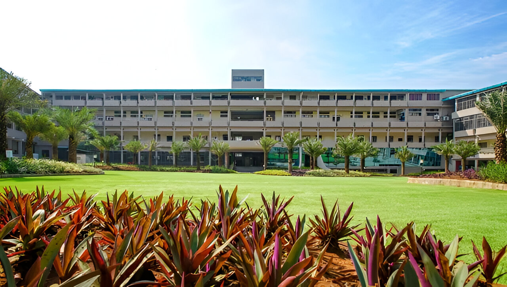

D.Y. Patil College of Engineering & Technology operates as a self-financing autonomous institution founded in 1984. The college has Autonomous status granted by UGC and Shivaji University, AICTE approval, Government of Maharashtra recognition, and NAAC 'A' grade accreditation.

